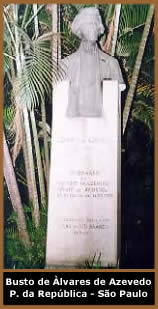

Em 12 e Setembro de 1831, nascia
em São Paulo, Manuel Antônio Álvares de Azevedo.
Filho de Inácio Manuel Álvares de Azevedo e Maria
Luiza Mota Azevedo, o poeta, contista e ensaísta Álvares
de Azevedo, teria nascido na sala da biblioteca da Faculdade de
Direito de São Paulo; porém, foi constatado que
o nascimento se deu na casa do avô paterno, Severo Mota.
Filho
de família ilustre, mudou-se para o Rio de Janeiro em 1833,
e em 1840 ingressou no Colégio Stoll; retornando a São
Paulo em 1844. Regressou para o Rio de Janeiro no ano seguinte
e matriculou-se no Colégio Pedro II. Finalmente, em 1848
entrou para a Faculdade de Direito de São Paulo. Tendo
uma vida literária intensa, Álvares de Azevedo foi
fundador da Revista Mensal da Sociedade Ensaio Filosófico
Paulistano.
Fortemente influenciado por Lord
Byron e Musset, Álvares
de Azevedo inseriu em suas poesias elementos da linguagem desses
escritores. A melancolia e a presença constante da morte
eram temas perenes em suas obras.
Álvares de Azevedo era de pouca vitalidade
e o desconforto das repúblicas aliado ao esforço
intelectual intenso, enfraqueciam sua saúde. Entre 1851
e 1852, manifestou-se a tuberculose pulmonar, agravado por uma
lesão ocasionada numa queda de cavalo ocorrida no mês
anterior. Sofreu uma intervenção cirúrgica
que não surtiu efeito, e faleceu às 17 horas no
dia 25 de Abril de 1852. Seu corpo foi enterrado no cemitério
Pedro II, na Praia Vermelha; em 1854, foi transladado para o cemitério
São João Batista.
Se eu morresse amanhã foi escrita
dias antes de sua morte e lida no enterro por Joaquim Manuel Macedo.
Álvares de Azevedo era amigo de Bernardo
Guimarães, Aureliano Lessa e José Bonifácio;
com que dividiu as acomodações da Chácara
dos Ingleses, em São Paulo.
Entre 1848 e 1851, publicou alguns poemas, artigos
e discursos. Depois da sua morte surgiram as Poesias
(1853 e 1855), cujas edições sucessivas uniram-se
aos outros escritos, alguns dos quais publicados antes em separado.
As obras completas, como as conhecemos hoje, compreendem: Lira
dos vinte anos, Poesias diversas, O poema do
frade e O conde Lopo, poemas narrativos; Macário,
"tentativa dramática"; Noite na taverna,
contos fantásticos; a terceira parte do romance O livro
de Fra Gondicário; os estudos críticos sobre
Literatura e civilização em Portugal, Lucano, George
Sand, Jacques Rolla, além de artigos, discursos e 69 cartas.
Preparada para integrar As três liras,
projeto de livro conjunto de Álvares de Azevedo, Aureliano
Lessa e Bernardo Guimarães, a Lira dos vinte anos
é a única obra de Álvares de Azevedo cuja
edição foi preparada pelo poeta. Vários poemas
foram acrescentados depois da primeira edição (póstuma),
à medida que iam sendo descobertos.
A
característica intrigante de sua obra reside na articulação
consciente de um projeto literário baseado na contradição,
talvez a contradição que ele próprio sentisse,
na condição de adolescente.
Perfeitamente enquadrada nos dualismos que caracterizam
a linguagem romântica, essa contradição é
visível nas partes que formam sua obra principal, Lira
dos Vinte Anos. A primeira e a terceira partes da obra mostram
um Álvares adolescente, casto, sentimental e ingênuo.
Já a segunda parte apresenta uma face irreverente, irônica,
macabra e por vezes orgíaca e degradada de um moço-velho,
isto é, um jovem em conflito com a realidade, tragado pelos
vícios e amadurecido precocemente.
A obra de Álvares de
Azevedo apresenta linguagem inconfundível, em cujo vocabulário
são constantes as palavras que expressam seus estados de
espírito, a fuga do poeta da realidade, sua busca incessante
pelo amor, a procura pela vida boêmia, o vício, a
morte, a palidez, a noite, a mulher... Em Lembranças
de morrer, está o melhor retrato dos sentimentos que
envolvem sua vida: "Descansem o meu leito solitário/
Na floresta dos homens esquecida/ À sombra de uma cruz
e escrevam nela:/ - Foi poeta, sonhou e amou na vida."
Por Spectrum
Texto
Complementar:
A
Morte e o Mito
Obras
Disponíveis:
Contos (Downloads)